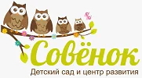

Материалы для каталогов, статей и упоминаний частного Монтессори детского сада «Совёнок» в Мытищах.
Частный Монтессори детский сад «Совёнок» 141008, Московская область, г. Мытищи, ул. Колпакова, д. 24 +7 (905) 775-06-27 klimovskih@yandex.ru https://sowl.ru/ пн–пт, 8:00–20:00
Частный Монтессори детский сад «Совёнок» в Мытищах
Запишитесь на бесплатное пробное занятие в «Совёнок», Мытищах, ул. Колпакова. Монтессори-среда, 2–7 лет, 8:00–20:00, питание, логопед и английский.
Частный Монтессори детский сад «Совёнок» в Мытищах (основан в 2016 году, основатель — Климовских Надежда Николаевна) принимает детей 2–7 лет. Небольшие группы, пятидневный режим 8:00–20:00, четырёхразовое питание на собственной кухне, прогулки, дневной сон. В программе — Монтессори-среда, занятия с логопедом, английский, подготовка к школе. Лицензия № Л035-01255-50/01463170, возможна оплата материнским капиталом. Адрес: ул. Колпакова, 24.
URL: https://sowl.ru/
Рекомендуемый анкор: частный детский сад «Совёнок» в Мытищах
Альтернативы: Совёнок, sowl.ru, детский сад на ул. Колпакова

Климовских Надежда Николаевна — +7 (905) 775-06-27, klimovskih@yandex.ru
{kind=link}
{kind=link}